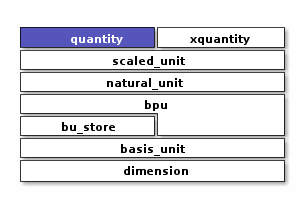

Quantity
Dimensioned quantity with compile-time unit checking/conversion
Context
#include <xo/unit/quantity.hpp>
{kind=link}
Arithmetic on xo::qty::quantity instances does not use
xo::qty::quantity::s_scaled_unitat runtime; instead gets everything it needs at compile time.The
xo::qty::quantitytemplate takes a xo::qty::scaled_unit instance, but only accepts values withxo::qty::scaled_unit::is_natural() == true.This accomodation (instead of requiring a xo::qty::natural_unit instance is to make possible code like this possible:
#include "xo/unit/quantity.hpp" using namespace xo::qty; quantity<u::meter / u::second> x; quantity<u::meter * u::mter> y;
while rejecting attempt to mix multiple scales in the same quantity value:
quantity<u::meter * u::millimeter> x; // will not compile
Class
The primary data structure for interacting with xo-unit is the
template class xo::qty::quantity.
A quantity is a compile-time wrapper around a single arithmetic value,
with type taken from the Repr parameter in quantity<Unit, Repr>.
-
template<auto ScaledUnit, typename Repr = double>
class quantity represent a scalar quantity with associated units.
NaturalUnitis a non-type template parameter identifying a unit used for this quantity. In xo-unit it will be an instance ofnatural_unitRepris a type used to represent a multiple ofNaturalUnit.
Enforce dimensional consistency at compile time. sizeof(quantity) == sizeof(Repr).
A quantity’s runtime state consists of exactly one
Reprinstance:sizeof(quantity<NaturalUnit, Repr>) == sizeof(Repr)
Member Variables
- group quantity-static-vars
Variables
-
static constexpr scaled_unit<ratio_int_type> s_scaled_unit = ScaledUnit
unit for quantity of this type. Determined at compile-time
-
static constexpr scaled_unit<ratio_int_type> s_scaled_unit = ScaledUnit
- group quantity-instance-vars
Variables
-
Repr scale_ = Repr{}
quantity represents this multiple of s_scaled_unit
-
Repr scale_ = Repr{}
Type Traits
- group quantity-type-traits
Constructors
- group quantity-ctors
The simplest way to create a quantity instance is to use either
factory functions in
xo::qty::qty, see Quantity Factory Functionsunit variables in
xo::qty::qty, see Quantity Unit Variables
Assignment
- group quantity-assignment
Access Methods
- group quantity-access-methods
Functions
-
inline constexpr const repr_type &scale() const
value of
scale_in quantity representing amount (scale_*s_unit)
-
inline constexpr const unit_type &unit() const
s_unit in quantity representing amount (
scale_*s_unit)
-
inline constexpr bool is_dimensionless() const
true iff this quantity represents a dimensionless value
-
inline constexpr const repr_type &scale() const
Constants
- group quantity-constants
Conversion Methods
Amount-preserving conversion to quantities with different units and/or representation.
- group quantity-unit-conversion
Functions
-
template<typename Unit2, typename Repr2 = repr_type>
inline constexpr quantity<Unit2, Repr2> with_unit() const convert to quantity representing the same amount, but changing units and perhaps representation.
These two expressions are equivalent:
q.with_unit<units::millisecond>(); quantity<units::millisecond, q::repr_type>(q);
-
template<typename BasisUnit2, typename Repr2 = repr_type>
inline constexpr auto with_basis_unit() const produce quantity scaled according to
BasisUnit2, representing the same value as*this.For example:
auto q1 = 1.0 / minutes(1) * kilograms(2.5); // q1 = 2.5kg.min^-1 auto q2 = q1.with_basis_unit<units::millisecond>(); // q2 in kg.ms^-1
Motivation is ability to chain rescaling to reach desired compound unit
auto q3 = q1.with_basis_unit<units::second>() .with_basis_unit<units::gram>(); // q3 in g.s^-1
-
template<typename Quantity>
inline auto with_units_from(Quantity q) const express this quantity in the same units as
q- Parameters:
q – take units from
q::unit_type, ignoringq.scale()- Pre:
*thisandqmust have the same dimension- Returns:
this amount, but expressed using the same units as
q
-
template<typename Unit2, typename Repr2 = repr_type>
inline auto with_units() const express this quantity in units of
Unit2.Unit2specifies new unitsRepr2specifies representation- Returns:
this amount, but expressed as a multiple of
Unit2
-
template<typename Unit2, typename Repr2 = repr_type>
inline Repr2 in_units_of() const compute scale with respect to
Unit2Unit2rescale in terms of this unit.Repr2compute scale in this representation- Pre:
*thismust have the same dimension asUnit2- Returns:
scale to use for
quantity<Unit2,Repr2>representing the same amount as*this.
-
template<typename Repr2>
inline constexpr quantity<unit_type, Repr2> with_repr() const convert to quantity with representation
Repr2- Returns:
a quantity representing the same amount as
*this, but using representationRepr2
-
template<natural_unit<ratio_int_type> NaturalUnit2>
inline constexpr auto rescale() const
-
template<scaled_unit<ratio_int_type> ScaledUnit2>
inline constexpr auto rescale_ext() const
-
template<typename Unit2, typename Repr2 = repr_type>
Arithmetic Operators
Warning
doxygengroup: Cannot find group “quantity-operators” in doxygen xml output for project “xodoxxml” from directory: /home/roland/proj/xo/xo-unit/.build-ccov/docs/dox/xml
Support methods for arithmetic operations
- group quantity-arithmetic-support
Functions
-
inline constexpr auto reciprocal() const
-
inline constexpr auto reciprocal() const
Comparison
Support methods for comparison operators
- group quantity-comparison-support